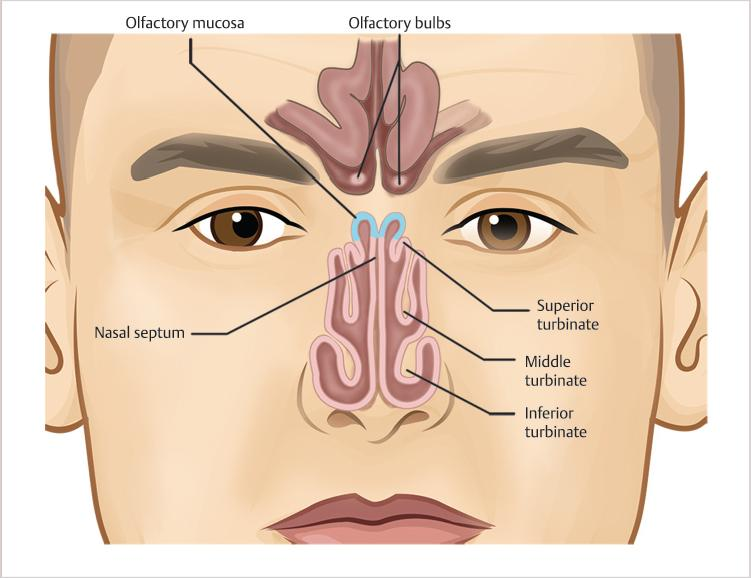

📍 Los cuatro pares de senos
- 🟦 Senos frontales (frente).
- 🟨 Senos maxilares (mejillas).
- 🟩 Senos etmoidales (entre los ojos).
- 🟪 Senos esfenoidales (parte profunda del cráneo).
Parte del sistema respiratorio.

La nariz es la primera parte del aparato respiratorio. No solo permite la entrada del aire, sino que comienza a prepararlo antes de que llegue a los pulmones.
Filtrar, calentar y humidificar el aire antes de que llegue a zonas más profundas.
Cuando inhalamos, el aire entra por las fosas nasales. Las vibrisas (pelos nasales) retienen partículas grandes como polvo o polen.
Después, el aire atraviesa la cavidad nasal, donde encuentra los cornetes, unas estructuras curvas que hacen que el aire cambie de dirección y tenga más contacto con la mucosa.
Exterior
↓
Fosas nasales
↓
Vibrisas
↓
Cornetes
↓
Nasofaringe
↓
Laringe

La superficie interna de la nariz está recubierta por una mucosa respiratoria. Esta mucosa contiene dos tipos principales de células encargadas de producir el moco:
Ambas trabajan constantemente para formar una fina capa de moco que recubre toda la cavidad nasal.
Los senos paranasales son cavidades llenas de aire situadas dentro de algunos huesos del cráneo y alrededor de la cavidad nasal. Aunque parecen espacios vacíos, su interior está completamente revestido por la misma mucosa respiratoria que recubre la nariz.
Esta mucosa produce moco de forma continua, el cual es conducido hacia la cavidad nasal a través de pequeños conductos llamados ostios, donde continúa el sistema de limpieza natural de las vías respiratorias.
Todos los senos están conectados con la cavidad nasal mediante pequeños orificios llamados ostios, que permiten el drenaje del moco y la ventilación de estas cavidades.
Respirar por la nariz acondiciona mejor el aire que hacerlo por la boca.
Nariz = filtro, calentador y humidificador.